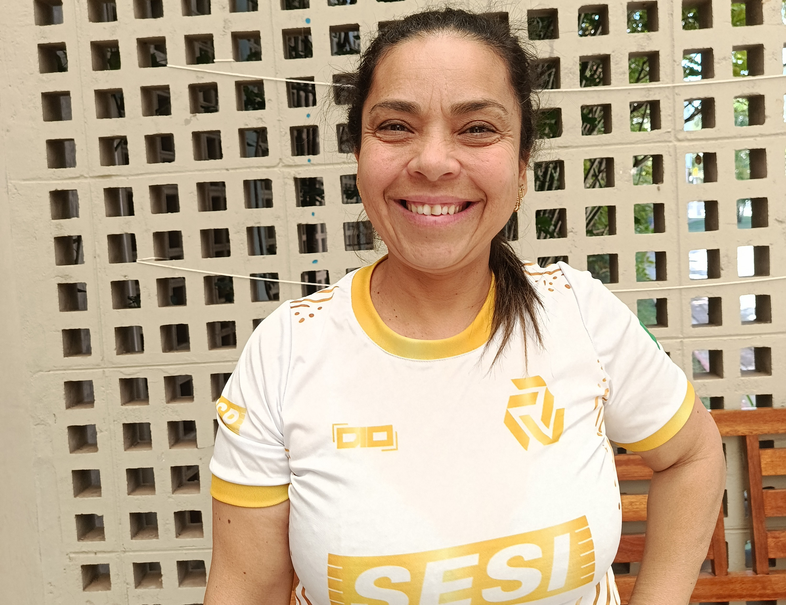
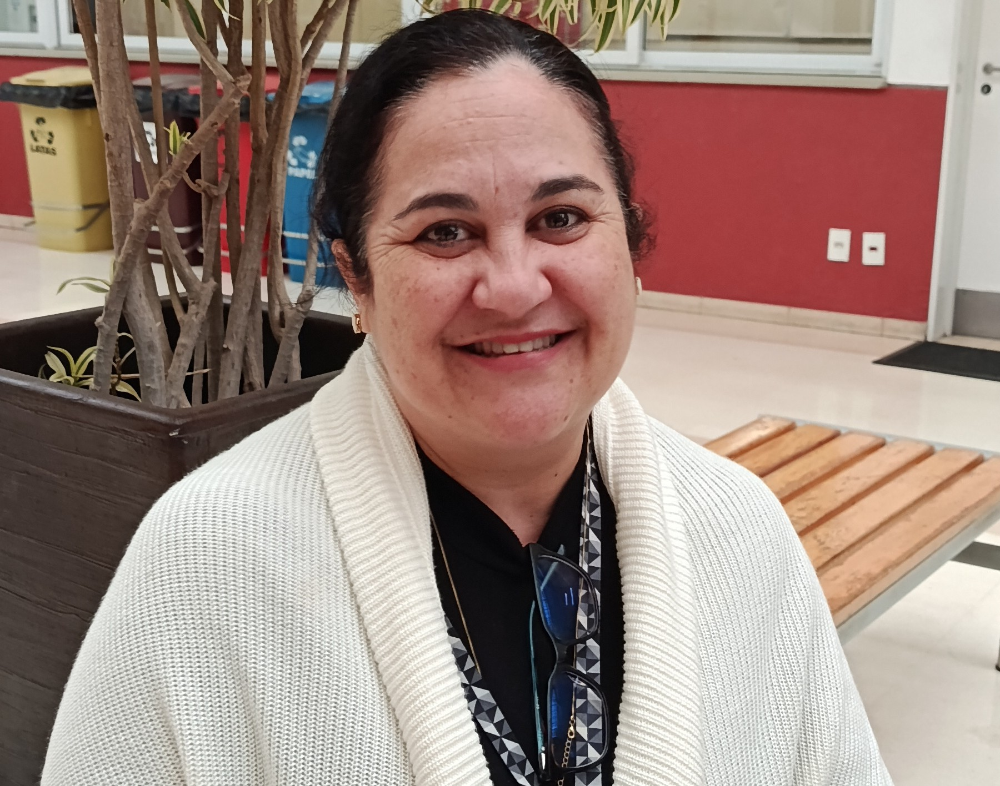
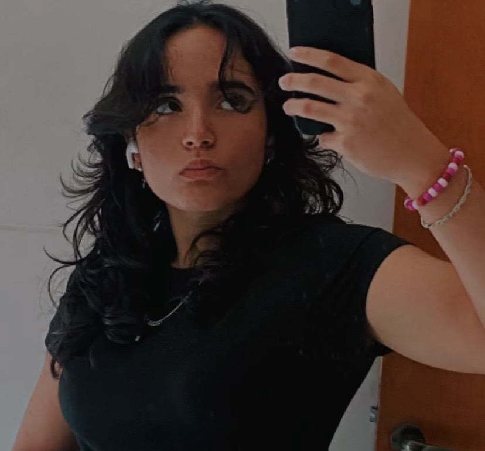
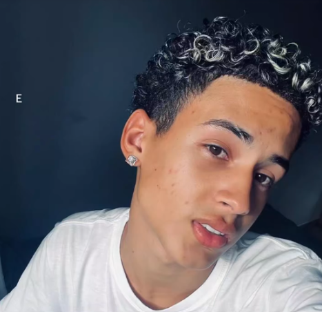
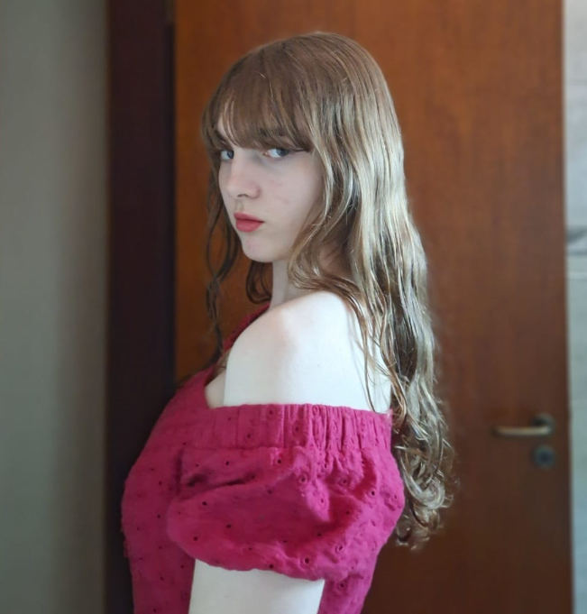
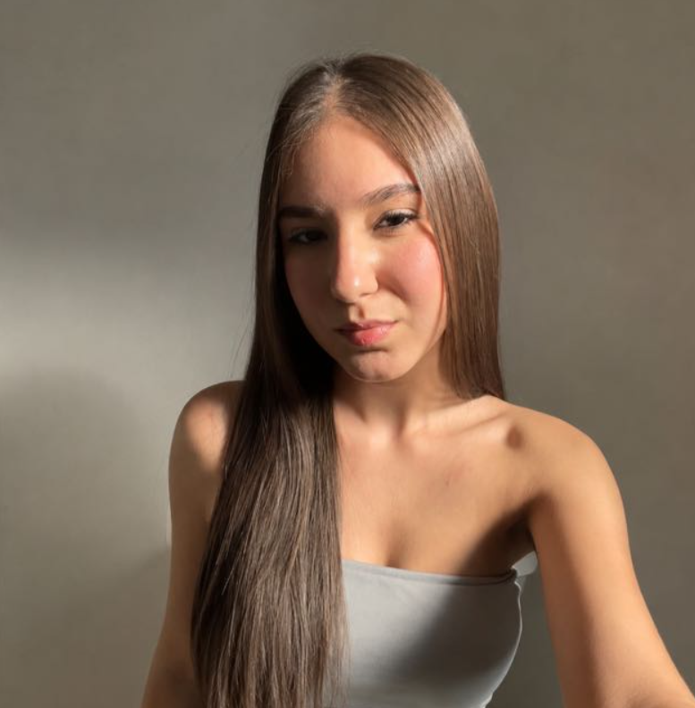

PROJETO CODEFORGE • SESI-SENAI
Histórias que Inspiram
Um projeto criado por alunos para reconhecer as mulheres que fazem a nossa escola acontecer todos os dias. Através de entrevistas e histórias, buscamos conhecer suas trajetórias, dando voz a diferentes profissionais que contribuem para a nossa escola.

SOBRE O PROJETO
Um projeto feito por alunos, sobre mulheres que inspiram.
Somos o CodeForge, grupo de alunos do curso técnico de Desenvolvimento de Sistemas SESI-SENAI.Criamos este projeto para conhecer e valorizar as histórias das mulheres que fazem parte da nossa instituição.
CODEFORGE • 2026
POR QUE CONTAR ESSAS HISTÓRIAS?
Tornar visível também é uma forma de agradecer.

Muitas vezes convivemos diariamente com essas profissionais sem conhecer suas histórias.
Este projeto busca dar voz, reconhecimento e visibilidade a essas mulheres e mostrar a importância de cada uma para nossa comunidade escolar.
VOZ • RECONHECIMENTO • VISIBILIDADE
Cada entrevista abre uma nova janela para a nossa escola.
Explore as entrevistas e descubra as experiências, aprendizados e momentos que marcaram a trajetória de cada mulher da nossa instituição.
11 VOZES • 1 COMUNIDADE
Assista também
CONHEÇA NOSSA EQUIPE

Gabrielle Nascimento

José Cordeiro

Larissa Tartarotti

Victoria Barbosa
Yasmin Galico